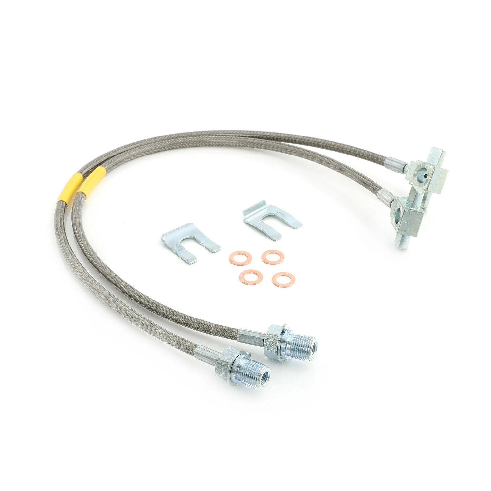

1 / 3FAPO Front 4-6" wydłużony przewód hamulcowys Do Chevy C K 10 20 30 K5 Blazer 1971-1978
Specyficzny przedmiot: Stan: nowy Marka: FAPO Gwarancja producenta: 1 rok Typ dopasowania: Wydajność / Niestandardowe Numer części producenta: FZ034010 Elementy montażowe w zestawie: Tak Umieszczenie na pojeździe: Przód Zastosowanie: Kompatybilny z Chevy GMC C10 K10 C15 K15 C20 K20 C25 K25 C35 K35 Suburban Jimmy z lat 1971-1978 z podnośnikiem 4-6 cala Zawartość zestawu: 2 × Przednie przewody hamulcowe Cechy produktu…
Item Specific: Condition: New Brand: FAPO Manufacturer Warranty: 1 Year Fitment Type: Performance / Custom Manufacturer Part Number: FZ034010 Mounting Hardware Included: Yes Placement on Vehicle: Front Application: Compatible with 1971-1978 Chevy GMC C10 K10 C15 K15 C20 K20 C25 K25 C35 K35 Suburban Jimmy with 4-6 in. lift Package Includes: 2 × Front Brake Lines Features: Front Length: 23.7 in. Fully DOT Approved and meet the highest DOT and ISO standards Complete with copper banjo washers and line retention brackets Strong woven stainless steel outer shell protects rubber and Kevlar casing around the Teflon inner hose Braided stainless steel exterior keeps lines safe from debris, rocks, and mud Durable outer layer prevents expansion of the internal Teflon layer High quality hollow fasteners at both ends provide a leak-free flow path 100% Brand New, Never Used or Installed Accessories in the photos are included 1-year warranty for any manufacturing defect
699,99 PLN
Opis produktu
Specyficzny przedmiot:
- Stan: nowy
- Marka: FAPO
- Gwarancja producenta: 1 rok
- Typ dopasowania: Wydajność / Niestandardowe
- Numer części producenta: FZ034010
- Elementy montażowe w zestawie: Tak
- Umieszczenie na pojeździe: Przód
Zastosowanie:
- Kompatybilny z Chevy GMC C10 K10 C15 K15 C20 K20 C25 K25 C35 K35 Suburban Jimmy z lat 1971-1978 z podnośnikiem 4-6 cala
Zawartość zestawu:
- 2 × Przednie przewody hamulcowe
Cechy produktu:
- Długość przodu: 23,7 cala
- W pełni zatwierdzone przez DOT i spełniające najwyższe standardy DOT i ISO
- W komplecie z miedzianymi podkładkami banjo i wspornikami do mocowania linki
- Mocna, tkana powłoka zewnętrzna ze stali nierdzewnej chroni gumową i kevlarową osłonę wokół teflonowego węża wewnętrznego
- Zewnętrzna część plecionki ze stali nierdzewnej chroni linki przed gruzem, kamieniami i błotem
- Trwała warstwa zewnętrzna zapobiega rozszerzaniu się wewnętrznej warstwy teflonowej
- Wysokiej jakości wydrążone łączniki na obu końcach zapewniają szczelną ścieżkę przepływu
- 100% fabrycznie nowy, nigdy nie używany ani instalowany
- W zestawie akcesoria widoczne na zdjęciach
- 1 rok gwarancji na wszelkie wady produkcyjne
Item Specific:
- Condition: New
- Brand: FAPO
- Manufacturer Warranty: 1 Year
- Fitment Type: Performance / Custom
- Manufacturer Part Number: FZ034010
- Mounting Hardware Included: Yes
- Placement on Vehicle: Front
Application:
- Compatible with 1971-1978 Chevy GMC C10 K10 C15 K15 C20 K20 C25 K25 C35 K35 Suburban Jimmy with 4-6 in. lift
Package Includes:
- 2 × Front Brake Lines
Features:
- Front Length: 23.7 in.
- Fully DOT Approved and meet the highest DOT and ISO standards
- Complete with copper banjo washers and line retention brackets
- Strong woven stainless steel outer shell protects rubber and Kevlar casing around the Teflon inner hose
- Braided stainless steel exterior keeps lines safe from debris, rocks, and mud
- Durable outer layer prevents expansion of the internal Teflon layer
- High quality hollow fasteners at both ends provide a leak-free flow path
- 100% Brand New, Never Used or Installed
- Accessories in the photos are included
- 1-year warranty for any manufacturing defect
FAPO Polska
Ten produkt obsługujemy lokalnie
Autoryzowana obsługa
FAPO Polska prowadzi katalog, kontakt i zamówienia bez odsyłania klienta do zewnętrznych sklepów.
Dobór po aucie
Sprawdzamy dopasowanie produktu do pojazdu, rocznika i wersji przed finalizacją zamówienia.
Wsparcie po zakupie
Masz kontakt w Polsce w sprawach zamówień, wysyłki, gwarancji i zwrotów.